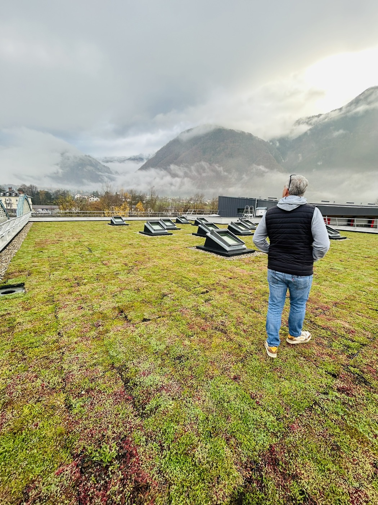

Réalisé pour le Département de la Savoie
Centre routier départemental · Saint-Étienne-de-Cuines (73)


Programme : reconstruction du centre routier départemental et du centre social, inauguré en octobre 2026
Intervention GFE : étanchéité des toitures-terrasses végétalisées (près de 600 m²), isolation, relevés, évacuations d'eaux pluviales, fenêtres-coupoles et sécurité en toiture